叶青武汉日记：确诊病人都到哪儿去了？
原文链接 备份链接 岛语 非常时期，武汉成了全国人民挂念、祈福的城市。封城后，武汉人民的真实生活是什么样？ 武汉在发生哪些变化？ 正和岛自1月26日起特别推出“叶青专栏”。叶青是一位定居武汉40年的市民，也是一名学者和官员。在过往多期的专 …

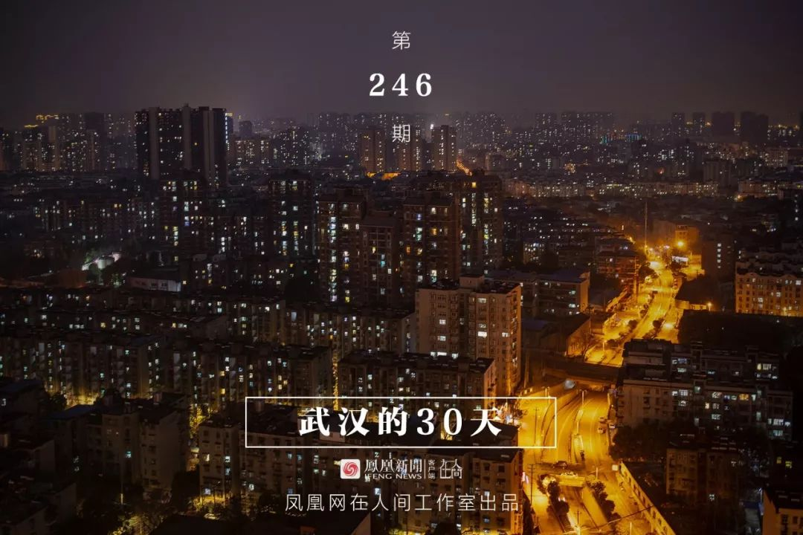
凤凰新闻客户端 凤凰网在人间工作室出品
第1天：
武汉市新型冠状病毒感染的肺炎疫情防控指挥部在1月23日凌晨宣布，当日10时起，武汉公交、地铁、轮渡、长途客运暂停运营；机场、火车站离汉通道暂时关闭；黄冈、鄂州等多个湖北城市陆续宣布“封城”，限制公共交通出入；湖北省的感染病例上升至444例，武汉新增8人死亡；浙江、广东、湖南等多个省市陆续启动重大突发公共卫生事件丨级响应。
中国境内新冠肺炎累计报告确诊病例830例，武汉累计报告确诊病例496例；中国境内新冠肺炎累计报告死亡25例，武汉累计报告死亡24例。
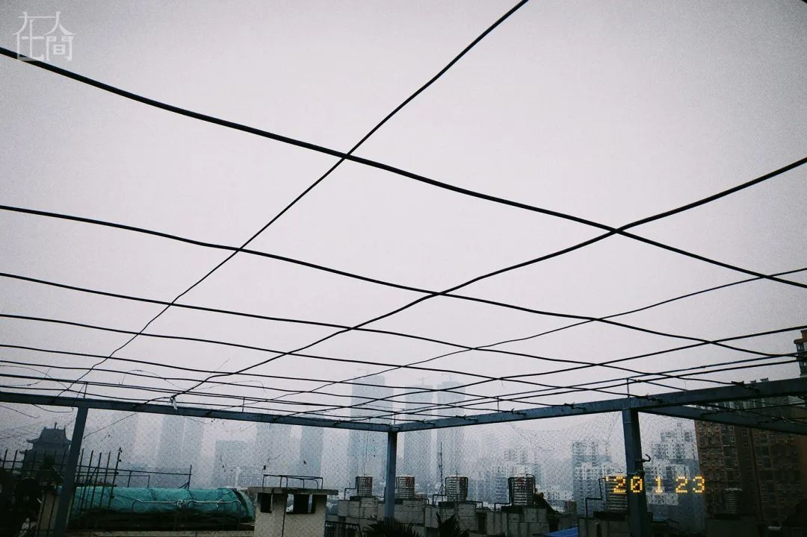
■ 1月23日早上7点，武汉，我家天台，老爸搭的葡萄架。王启明/摄

■ 1月23日，早晨8点，超市开门的瞬间。门口聚集了很多等待开门的市民，能感受到大家的情绪有点儿不太稳定，有的开始要求安保人员快点开门，说一些门口聚集这么多人很危险之类的话。王启明/摄
第2天：
中国迎来农历除夕，但当晚，社交媒体上出现大量前线医护人员的求助信息，称“物资不足”；当日，湖北启动重大突发公共卫生事件丨级响应；“火神山医院”开始紧急兴建。
中国境内新冠肺炎累计报告确诊病例1287例，武汉累计报告确诊病例572例；中国境内新冠肺炎累计报告死亡41例，武汉累计报告死亡38例。

■ 1月24日，封城24小时后，日通行几十万辆车的武汉长江二桥上车辆少了许多，车辆大都间隔百多米驶过。这一天结束后，过江隧道将关闭，三环内（含三环）过江桥梁通行实施体温检测管控。高风/摄
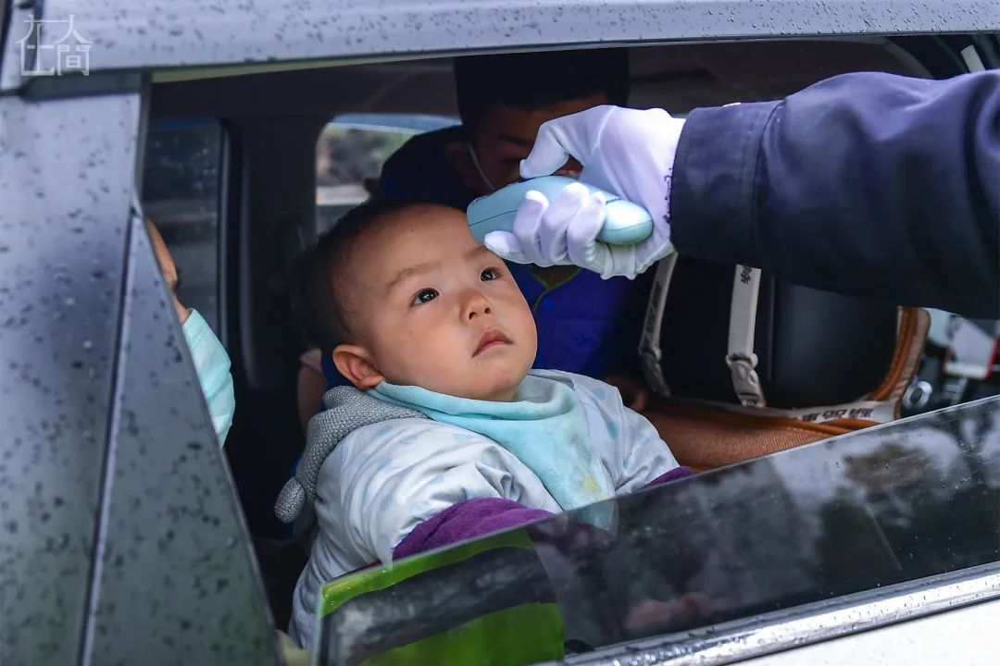
■ 1月24日，武汉东湖新技术开发区，公安分局茶棚治安检查站在给进城车辆上的小朋友测体温。刘中灿/摄
■ 1月24日，我在武汉江岸区，与父母一起，三人在家过年。大家庭传统的年夜饭聚餐，早因肺炎疫情通报而取消。高风/摄
第3天：
国家卫健委派出6支1230人医疗救治队驰援武汉。
中国境内新冠肺炎累计报告确诊病例1975例，武汉累计报告确诊病例618例；中国境内新冠肺炎累计报告死亡56例，武汉累计报告死亡45例。
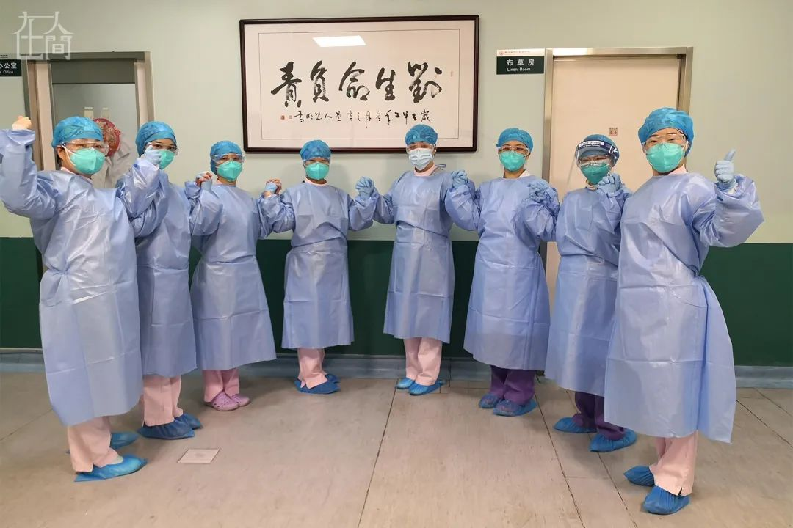
■ 1月25日，大年初一，我和我们心内科重症监护室的同事合照。徐大夫/供图
第4天：
中央应对疫情工作领导小组：适当延长春节假期，调整学校开学时间；武汉市市长周先旺表示，有500多万人离开武汉；美国宣布关闭武汉领事馆，并安排飞机撤离外交人员。
中国境内新冠肺炎累计报告确诊病例2744例，武汉累计报告确诊病例698例；中国境内新冠肺炎累计报告死亡80例，武汉累计报告死亡63例。
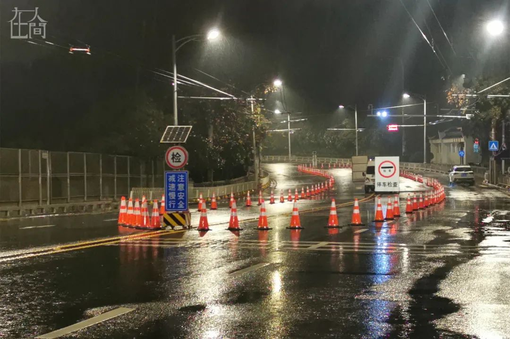
■ 1月26日，封江前夜的长江大桥。大年初二凌晨2点多，不远的路边，我碰到一个老太太，她说子女不在身边，老伴儿也去世，现在医院住不了院，没有床位，又回不了家。看她拿着CT，走路都没有力气。当时交通全瘫痪了，出租车也没有，帮她打110、120都没有办法。当时觉得不送她真的过意不去，下那么大雨，但是把她送回去后，我整夜未眠。山木/摄
第5天：
李克强总理来到武汉考察指导疫情防控工作。国务院办公厅宣布延长2020年春节假期至2月2日。
中国境内新冠肺炎累计报告确诊病例4515例，武汉累计报告确诊病例1590例；中国境内新冠肺炎累计报告死亡106例，武汉累计报告死亡85例。

■ 1月27日，武昌区街头，抢救病人的救护车。马骁/摄
第6天：
香港特首林郑月娥宣布大幅削减来往中国大陆交通服务，包括关闭高铁西九龙站，暂停所有来往香港和中国大陆的高铁、轮渡服务。
中国境内新冠肺炎累计报告确诊病例5974例，武汉累计报告确诊病例1905例；中国境内新冠肺炎累计报告死亡132例，武汉累计报告死亡104例。

■ 1月28日，武汉江岸区，母亲拉开卧室的窗帘，连日阴雨后，武汉终于迎来久违的阳光。高风/摄

■ 1月28日，武汉江岸区，封城那天买的一大提兜蔬菜，今天只剩下这最后三样，那天一兜菜总共花了400多，菜价高出平时50%以上，有的甚至翻倍。妈妈说：全部吃完再出去买，能晚一天是一天。高风/摄
第7天：
西藏自治区启动重大突发公共卫生事件Ⅰ级响应，至此全国31个省、市、自治区全部启动Ⅰ级响应。
中国境内新冠肺炎累计报告确诊病例7711例，武汉累计报告确诊病例2261例；中国境内新冠肺炎累计报告死亡170例，武汉累计报告死亡129例。
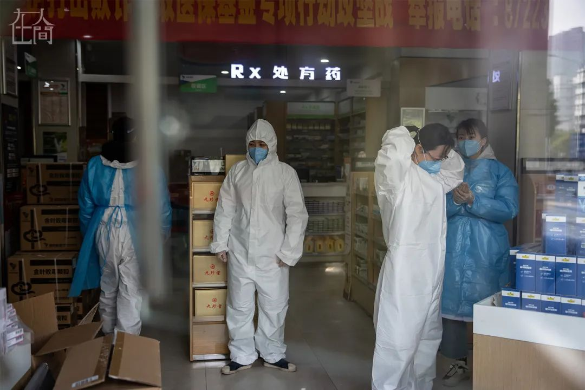
■ 1月29日，武汉市洪山区，汉口大药房开门营业前，员工们穿戴公司配发的隔离服做准备。李峥苨/摄
第8天：
黄冈市卫生健康委员会主任唐志红被提名免职；同日，西藏确诊首例病例，疫情已蔓延至中国所有省份。
中国境内新冠肺炎累计报告确诊病例9692例，武汉累计报告确诊病例2639例；中国境内新冠肺炎累计报告死亡213例，武汉累计报告死亡159例。

■ 1月30日，我出门采购蔬菜与药品，发现小区旁唯一开着的药店，顾客将需求报给店员，店员再将把药品放于小桌上进行无接触交易。高风/摄
第9天：
世卫组织发布新型冠状病毒感染肺炎疫情为国际关注的突发公共卫生事件。
中国境内新冠肺炎累计报告确诊病例11791例，武汉累计报告确诊病例3215例；中国境内新冠肺炎累计报告死亡259例，武汉累计报告死亡192例。

■ 1月31日，从各地源源不断汇集来的医疗物资被集中到了武汉国际博览中心A馆。这里堆放着当天抵达的定向捐赠的药品、口罩、酒精棉等医疗物资。图为来自武汉协和医院、武汉市第三医院等收治较多新冠肺炎患者的医院，和一些街道社区卫生中心等医疗机构的数十名医务人员陆续赶来，等待领取医疗物资。据几个不同医院的工作人员说，他们都是第一次来这里领取物资，甚至一些医生刚下夜班就急忙赶来，有人还没来得及脱下白大褂和鞋套，但大多准备了医院的介绍信。武汉市卫健委和红十字会的工作人员按照名单分配发放。武汉协和医院（本部）不在发放名单上。当天，经过两小时的协调，武汉协和医院本部的医务人员仍未领到符合医用标准的物资。一天前，这所医院医生通过微博等渠道再次求助，医用防护物资“不是告急，是没有了”。李峥苨/摄
第10天：
湖北省红十字会发表声明称，对物资分配中存在的问题深感痛心、自责和内疚。新型冠状病毒肺炎的全球确诊病例突破1万例，超越2003年非典疫情的8100例确诊病例数量。澳大利亚政府宣布拒绝所有来自或途经中国的非澳大利亚公民入境。
中国境内新冠肺炎累计报告确诊病例14380例，武汉累计报告确诊病例4109例；中国境内新冠肺炎累计报告死亡304例，武汉累计报告死亡224例。
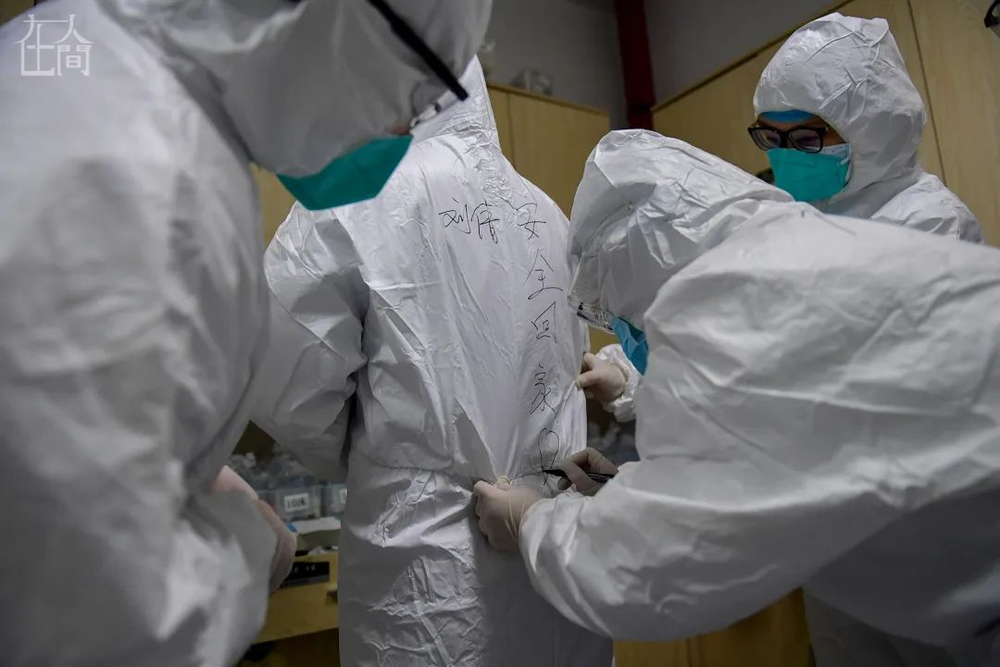
■ 2月1日武汉荣军医院住院部的护士在防护服上写下“武汉加油！”。刘中灿/摄
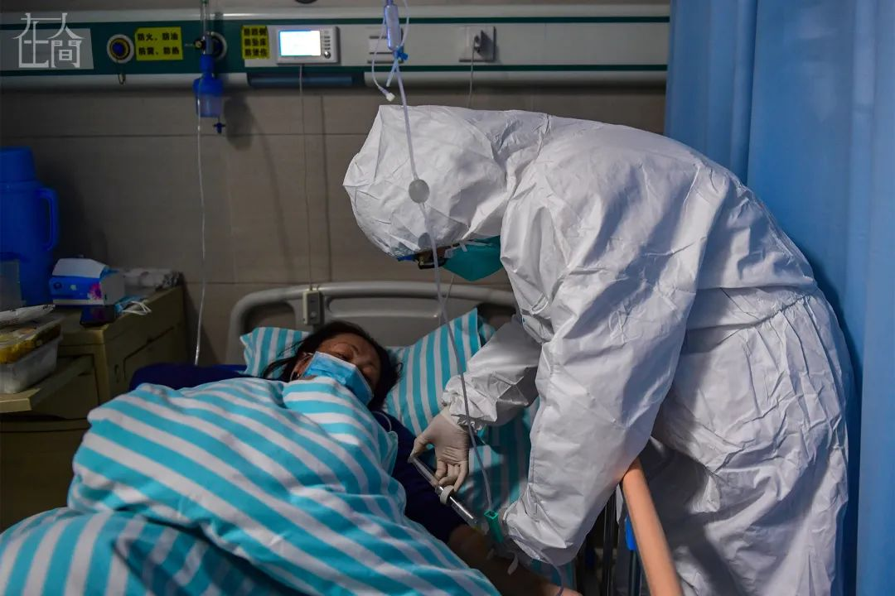
■ 2月1日武汉荣军医院内护士在给患者打针。刘中灿/摄
第11天：
湖北省宣布对所有疑似病患进行集中隔离，开始建设方舱医院。同日，火神山医院交付。
中国境内新冠肺炎累计报告确诊病例17205例，武汉累计报告确诊病例5142例；中国境内新冠肺炎累计报告死亡361例，武汉累计报告死亡265例。

■ 2月2日，武汉同济医院发热门诊中，不少患者在输液治疗。李峥苨/摄
第12天：
3所“方舱医院”在武汉开建。中国春节假期结束的首个交易日，上证综指暴跌7%，创下四年半以来最大单日跌幅。
中国境内新冠肺炎累计报告确诊病例20438例，武汉累计报告确诊病例6384例；中国境内新冠肺炎累计报告死亡425例，武汉累计报告死亡313例。
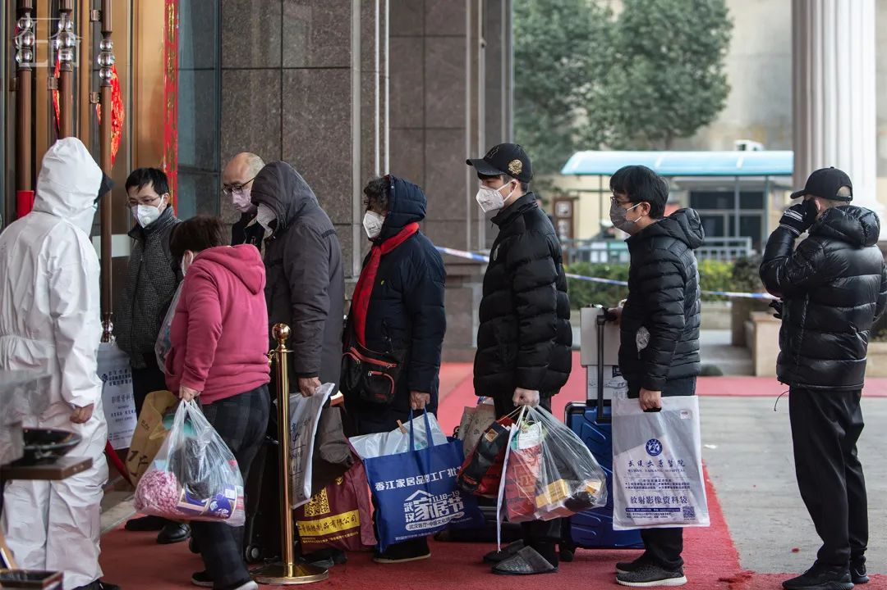
■ 2月3日，武汉市硚口区一家被改为新冠肺炎隔离点的维也纳酒店门口，来自各个社区的“四类人员”带着病历和生活用品等待入住。根据2月2日武汉市新型冠状病毒感染的肺炎防控指挥部的要求，全市各城区都在进行“四类人员”的集中收治和隔离工作。这四类人员是：确诊患者、疑似患者、无法排除感染可能的发热患者、确诊患者的密切接触者。确诊患者集中收治，疑似患者集中隔离，发热患者、密切接触者集中隔离观察。李峥苨/摄

■ 2月3日晚上9点多，火神山工地上还在忙碌的工人。刘中灿/摄
第13天：
当日起，武汉火神山医院开始收治患者；湖北省红十字会三名领导被处分；《新型冠状病毒感染的肺炎诊疗方案（试行第五版）》发布，将“疑似病例具有肺炎影像学特征者”作为湖北省临床诊断病例标准，这提示湖北地区新型冠状病毒诊断不再依赖核酸检测结果。
中国境内新冠肺炎累计报告确诊病例24324例，武汉累计报告确诊病例8351例；中国境内新冠肺炎累计报告死亡490例，武汉累计报告死亡362例。

■ 2月4日上午9时许，火神山医院迎来首批病人。刘中灿/摄
第14天：
“方舱医院”扩容至11家，接诊床位增至万余张，具有紧急救治、外科处置、临床检验等多种功能。
中国境内新冠肺炎累计报告确诊病例28018例，武汉累计报告确诊病例10117例；中国境内新冠肺炎累计报告死亡563例，武汉累计报告死亡414例。

■ 2月5日，武汉洪山体育馆方舱医院病床已铺好。刘中灿/摄

■ 2月5日晚，患者在江汉“方舱医院”内。当晚22时，位于武汉市江汉区武汉国际会展中心的“方舱医院”正式启用，接收新型冠状病毒感染的肺炎轻症患者。根据疫情指挥部的要求，这座共有床位1600张的江汉“方舱医院”交接给华中科技大学附属协和医院后，由该院负责运行及管理，并选派医疗队参加临床救治。
这位“方舱医院读书哥”姓付，从武大博士毕业后去美国深造，目前是博士后，在佛罗里达州立大学教书。他今年 39 岁，这次回武汉是探望父母。他父亲大年三十开始发烧，在武汉协和医院确诊为新型冠状病毒肺炎。他自己也于2月1日确诊为新冠肺炎，2月5日晚上作为第一批患者转到江汉方舱医院。柯皓/摄
第15天：
中国境内新冠肺炎累计报告确诊病例31161例，武汉累计报告确诊病例11618例；中国境内新冠肺炎累计报告死亡636例，武汉累计报告死亡478例。

■ 2月6日，政府征用579次公交车负责接送医护人员上下班，摆渡车司机接送人员时全身防护。和小欣/摄
第16天：
国家监委派调查组赴武汉，就群众反映的涉及李文亮医生有关问题作全面调查。
中国境内新冠肺炎累计报告确诊病例34546例，武汉累计报告确诊病例13603例；中国境内新冠肺炎累计报告死亡722例，武汉累计报告死亡545例。

■ 2月7日上午，武汉市中心医院后湖院区，市民在门诊楼前摆放花束和照片，悼念凌晨在这里因感染新冠肺炎抢救无效逝世的医生李文亮。花束中的卡片上写着：“疫情吹哨人，你是英雄，一路走好。”李峥苨/摄
第17天：
王贺胜同志任湖北省委委员、常委。
中国境内新冠肺炎累计报告确诊病例37198例，武汉累计报告确诊病例14982例；中国境内新冠肺炎累计报告死亡811例，武汉累计报告死亡608例。

■ 2月8日，武汉火神山医院，一支救护车队依次驶入，准备将患者送入病区。当天下午，从汉口医院、武汉市第六医院、武汉市红十字会医院等武汉市定点收治医院转诊而来的新一批新冠肺炎确诊患者，陆续抵达火神山医院。李峥苨/摄
第18天：
国家卫健委:支援武汉医护人员已达11000多人，但对专业人员资源的需求和缺口比较大。
中国境内新冠肺炎累计报告确诊病例40171例，武汉累计报告确诊病例16902例；中国境内新冠肺炎累计报告死亡908例，武汉累计报告死亡681例。

■ 2月9日，武汉百步亭社区，一位志愿者司机打开车门，让一位自行来到发车点的轻症新冠肺炎患者上车后，等待同事告知他目的地。这位患者将被送到市内一处方舱医院接受隔离治疗。武汉市要求在当天24时前对“四类人员”实现“应收尽收”，各个社区发起“总攻”。百步亭社区大约住了15万-18万人，大多是本地居民，老人小孩为主，曾因举办“万家宴”受到争议，百步亭社区工作人员说，疫情爆发以来，社区工作工作量庞大且繁杂，居委会内的工作人员从1月23日以来都没有休息过。李峥苨/摄
第19天：
中国境内新冠肺炎累计报告确诊病例42638例，武汉累计报告确诊病例18454例；中国境内新冠肺炎累计报告死亡1016例，武汉累计报告死亡748例。
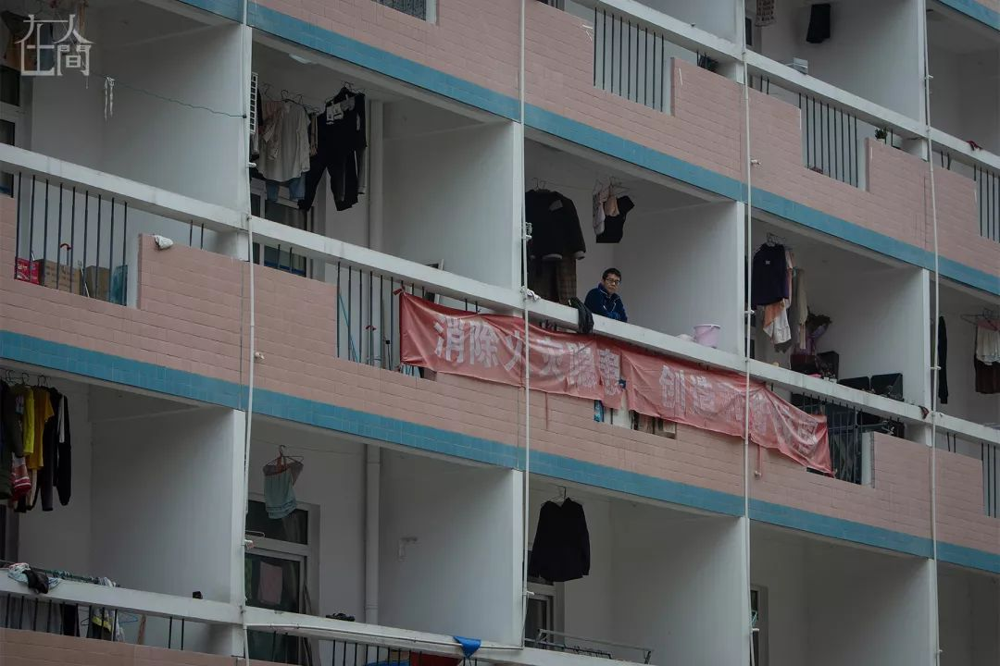
■ 2月10日，武汉船舶职业技术学院一栋已被征用为定点隔离点的学生宿舍楼里，一名患者在阳台上透气。为进一步加强“四类人员”集中收治隔离工作，武汉商学院、江汉大学、武汉船舶职业技术学院、武汉软件工程职业学院等武汉市属高校部分学生宿舍被临时征用，用于轻症患者的收治隔离等。武汉船舶职业技术学院目前已有9栋楼被征用，不到两天时间内腾出了1059个床位。自2月8日起陆续接收患者，目前大部分床位已有患者入住。大部分学生物品还留在宿舍内，学校对宿舍内物品进行了整理和消毒，有些进行了部分遮盖，每个宿舍腾出一张空床用于收治疑似、发热患者。李峥苨/摄
第20天：
国际病毒分类委员会正式命名新冠病毒为严重急性呼吸综合征冠状病毒2（SARS-CoV-2），世界卫生组织将新冠肺炎命名为COVID-19。
中国境内新冠肺炎累计报告确诊病例44653例，武汉累计报告确诊病例19558例；中国境内新冠肺炎累计报告死亡1113例，武汉累计报告死亡820例。
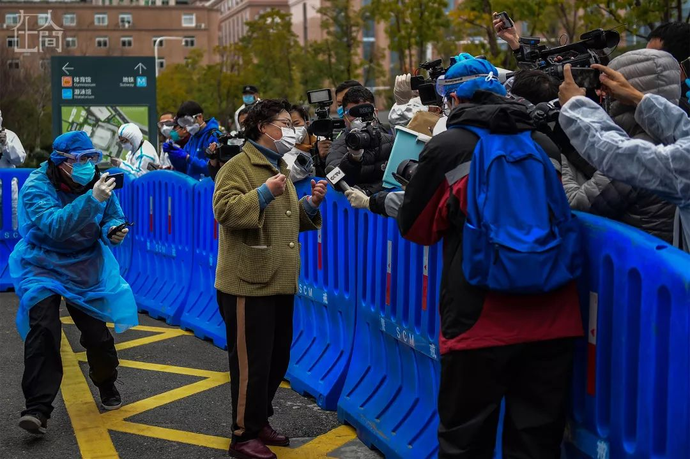
■ 2月11日，从洪山体育馆方舱医院出院的病人。刘中灿/摄
第21天：
中国境内新冠肺炎累计报告确诊病例59804例，武汉累计报告确诊病例32994例；中国境内新冠肺炎累计报告死亡1297例，武汉累计报告死亡966例。
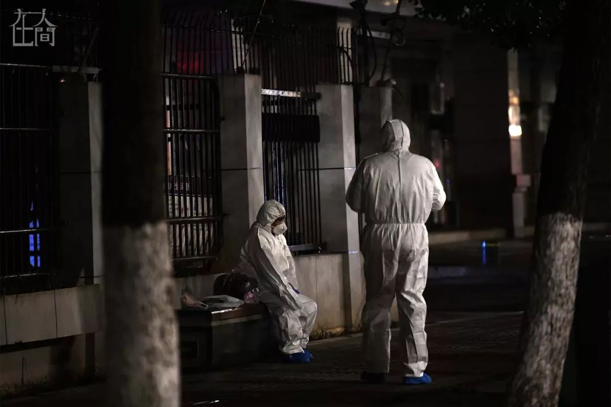
■ 2月12日夜里10点左右，武汉经济技术开发区临时方舱医院的入口附近，两个全身防护的市民在路边徘徊，女的坐着，看上去很疲惫，长椅上放着一个包。和小欣/摄
第22天：
中共中央决定：应勇同志任湖北省委委员、常委、书记，蒋超良同志不再担任湖北省委书记、常委、委员职务；王忠林同志任湖北省委委员、常委和武汉市委书记，马国强同志不再担任湖北省委副书记、常委、委员和武汉市委书记职务；湖北省内继续延迟复工开学。
中国境内新冠肺炎累计报告确诊病例63851例，武汉累计报告确诊病例35991例；中国境内新冠肺炎累计报告死亡1418例，武汉累计报告死亡1054例。

■ 2月13日下午，湖北武汉火神山医院，患者准备走出医院大门。当日，火神山医院7名新冠肺炎患者治愈出院，其中4名男性、3名女性。在满足两次核酸检测为阴性等出院标准后，他们乘坐救护车经历两次消杀离开病区，由一辆公交车分别送回家中，开始为期14天的居家隔离。据悉，目前火神山医院已收治新冠肺炎确诊患者超过1000人。中青报·中青网记者 李峥苨/摄
第23天：
公开招募献血者首日，武汉新冠肺炎康复者血浆捐献点迎首位献血者。
中国境内新冠肺炎累计报告确诊病例66492例，武汉累计报告确诊病例37914例；中国境内新冠肺炎累计报告死亡1523例，武汉累计报告死亡1123例。

■ 2月14日，武汉，一块红色的广告牌上面打出了“武汉加油”字样。赖鑫琳/摄
第24天：
中国境内新冠肺炎累计报告确诊病例68500例，武汉累计报告确诊病例39462例；中国境内新冠肺炎累计报告死亡1665例，武汉累计报告死亡1233例。
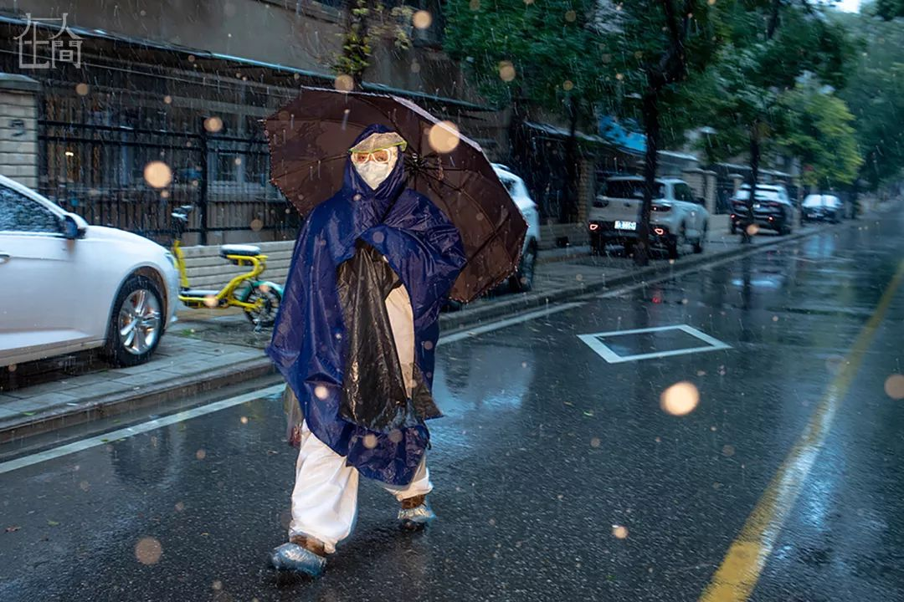
■ 2月15日，湖北省武汉市武昌区，穿着全套防护服的一名社区工作人员撑伞走过。当天受冷空气影响，武汉市融雪防冻指挥部已启动低温雨雪冰冻灾害Ⅱ级应急响应。李隽辉/摄
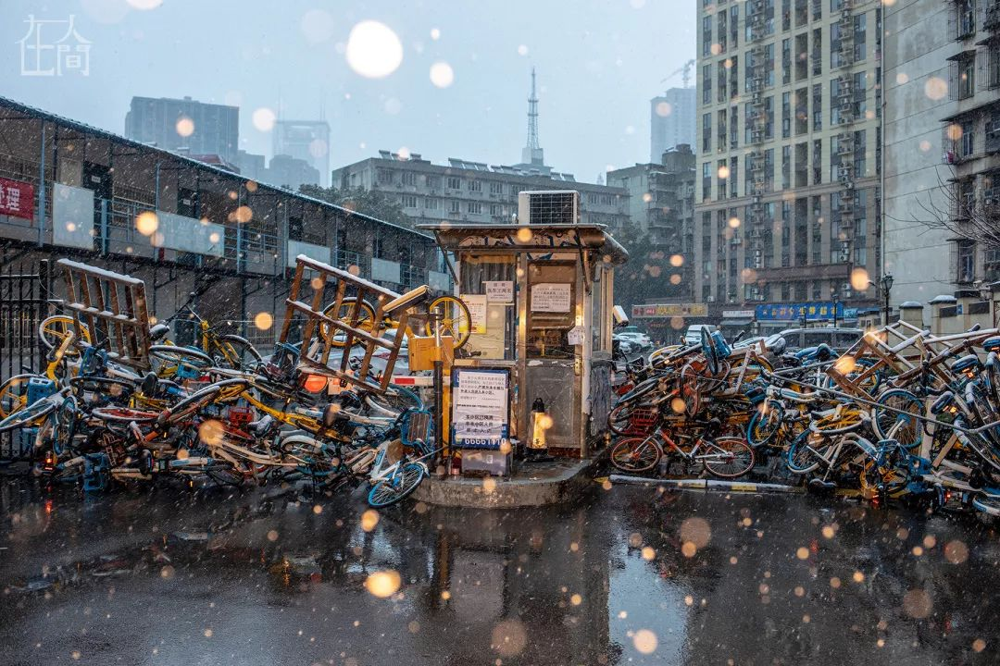
■ 2月15日，湖北省武汉市武昌区，共享单车在小区门口搭起“路障”。李隽辉/摄
第25天：
湖北：各地全面采取临时交通管制，所有非必需的公共场所一律关闭；全国第一例、第二例由遗体解剖获得的新冠肺炎病理完成送检。
中国境内新冠肺炎累计报告确诊病例70548例，武汉累计报告确诊病例41152例；中国境内新冠肺炎累计报告死亡1770例，武汉累计报告死亡1309例。

■ 2月16日，武汉市江汉路的一家超市门前，市民排起了长队。据超市张贴的通知，顾客需分批次进入，每半小时进入30个人。李隽辉/摄
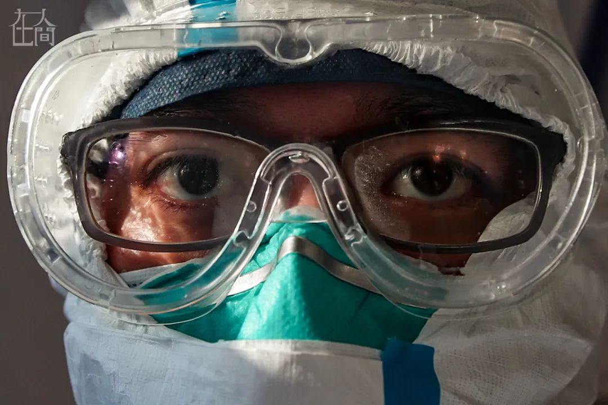
■ 2月16日，武汉，我的自拍照。当天我跟随武汉120急救车运转病人，穿了7个小时的纸尿裤，4个小时的防护衣，护目镜一次一次被雾水弥漫，当天结束拍摄任务，眼睛火辣辣的，痛了一晚，医生说可能是护目镜的消毒水没有晾干的缘故。赖鑫琳/摄
第26天：
中国境内新冠肺炎累计报告确诊病例72436例，武汉累计报告确诊病例42572例；中国境内新冠肺炎累计报告死亡1868例，武汉累计报告死亡1381例。
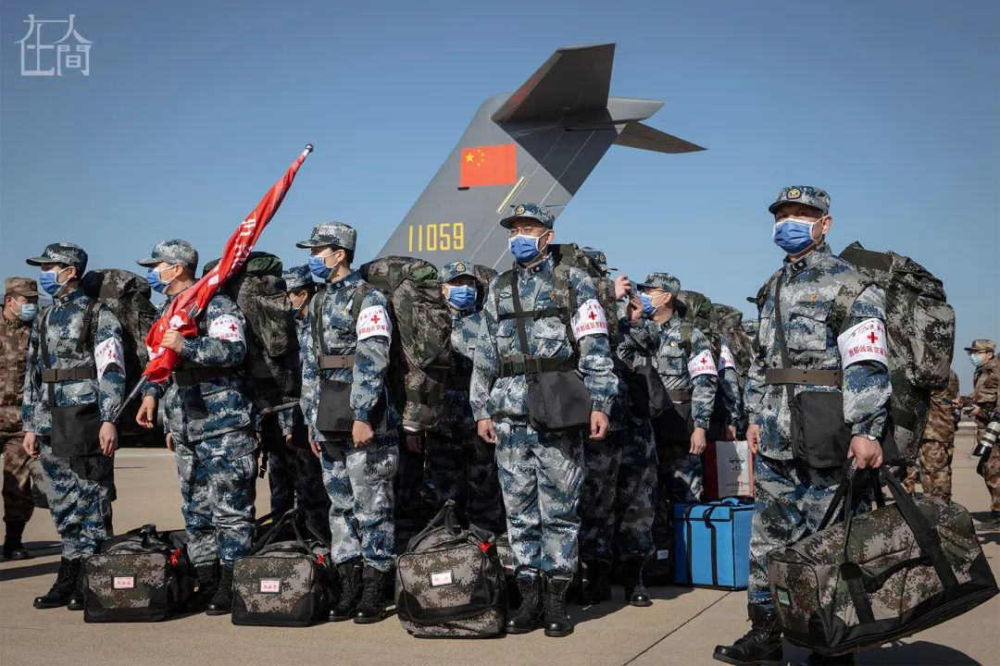
■ 2月17日，武汉天河机场，从上海、成都、兰州等多地起飞的运-20等多架空军运输机载着军队增派支援武汉抗击新冠肺炎疫情的又一批医护人员和物资抵达武汉。至此，军队增派的2600名医护人员已全部投入支援。李峥苨/摄
第27天：
中国境内新冠肺炎累计报告确诊病例74185例，武汉累计报告确诊病例44412例；中国境内新冠肺炎累计报告死亡2004例，武汉累计报告死亡1479例。
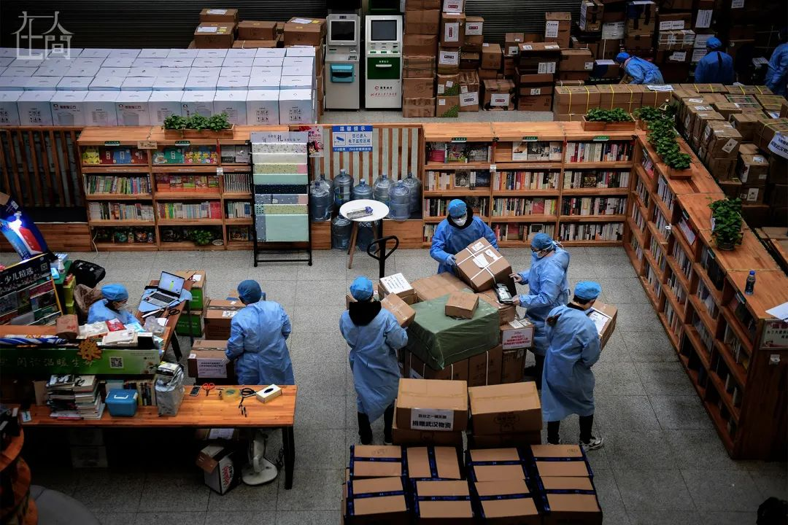
■ 2月18日，武大临床医学院的49名硕士研究生因“封城”滞留学校，他们当起了志愿者，与老师一道为医院清理和搬运防疫物资。刘中灿/摄
第28天：
《新型冠状病毒肺炎诊疗方案》再更新，增加长时间高浓度气溶胶传播可能；中国工程院副院长、呼吸与危重症医学专家王辰在接受央视采访时表示，新冠病毒有可能转成慢性的、像流感一样长期在人间存在的疾病，对此我们要做好准备。
中国境内新冠肺炎累计报告确诊病例74576例，武汉累计报告确诊病例45027例；中国境内新冠肺炎累计报告死亡2118例，武汉累计报告死亡1585例。
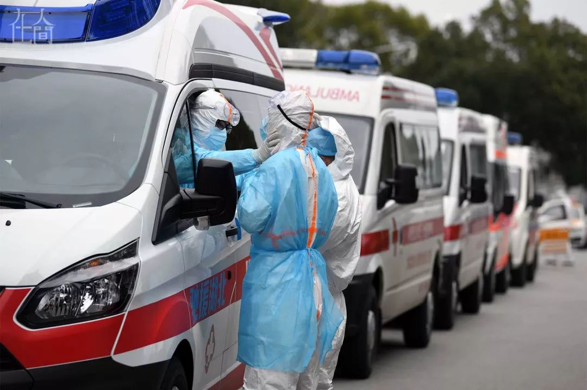
■ 2月19日，武汉协和医院西院区31名重病患者集体出院，医院安排十几辆救护车和爱心出租车送患者们回社区。几名救护车司机在接人之前相互检查防护服是否严密。和小欣/摄
第29天：
中国境内新冠肺炎累计报告确诊病例75465例，武汉累计报告确诊病例45346例；中国境内新冠肺炎累计报告死亡2236例，武汉累计报告死亡1684例。

■ 2月20日，因武汉封城，约有20人被滞留在武昌火车站地下停车场几日到二十几日不等，他们多是来武汉务工、看病、办事的外地人。地下停车场的“房客”有一个共同的目标：等着武汉好起来，出城。尹夕远/摄
第30天：
司法部监狱管理局：截至2月20日24时，全国共有湖北、山东、浙江三个省的5个监狱发生了罪犯感染疫情。
截至发稿前，中国境内新冠肺炎累计报告确诊病例75571例，武汉累计报告确诊病例45346例；中国境内新冠肺炎累计报告死亡2239例，武汉累计报告死亡1684例。

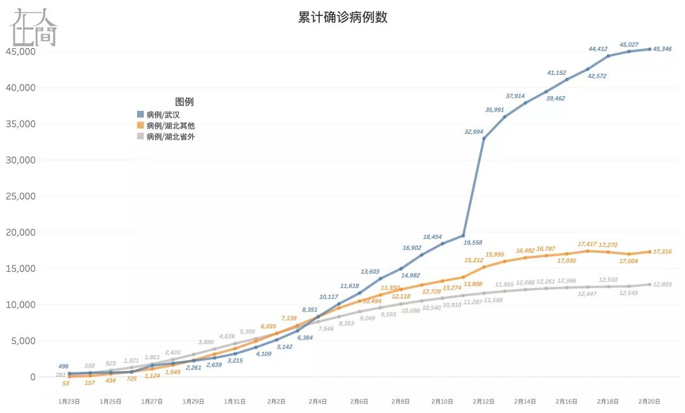

<< 滑动查看下一张图片 >>
■ 数据来源：国家卫健委官网、湖北卫健委官网（数据截至2月21日下午14点）制图：侯逸超
We must remember that these are people, not numbers.不是数字，而是生命！
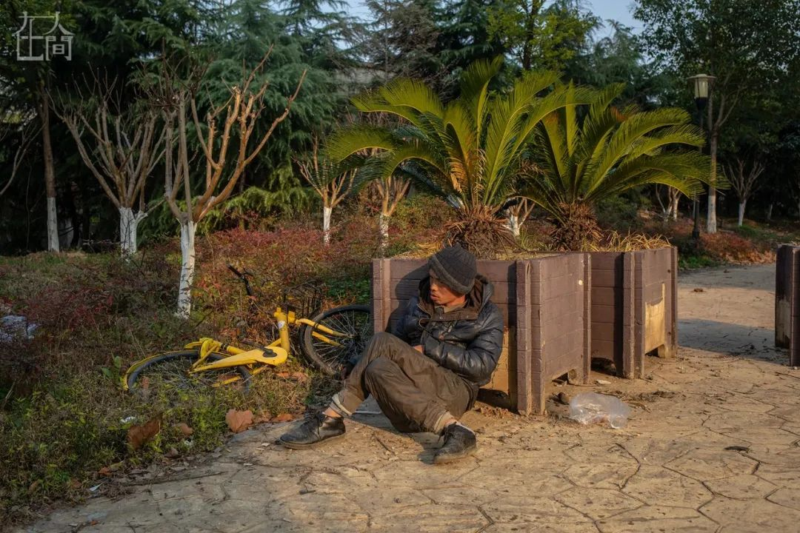
■ 2月21日，湖北省武汉市二环线白沙洲大道附近公园，一名男子独自倚靠在角落。我上前询问情况，他摇头不语，我把随身备用的口罩送给他，他说了声“谢谢”。建国爹/摄

■ 2月21日，武汉，更多流浪猫狗出现在街头，寻找食物。建国爹/摄
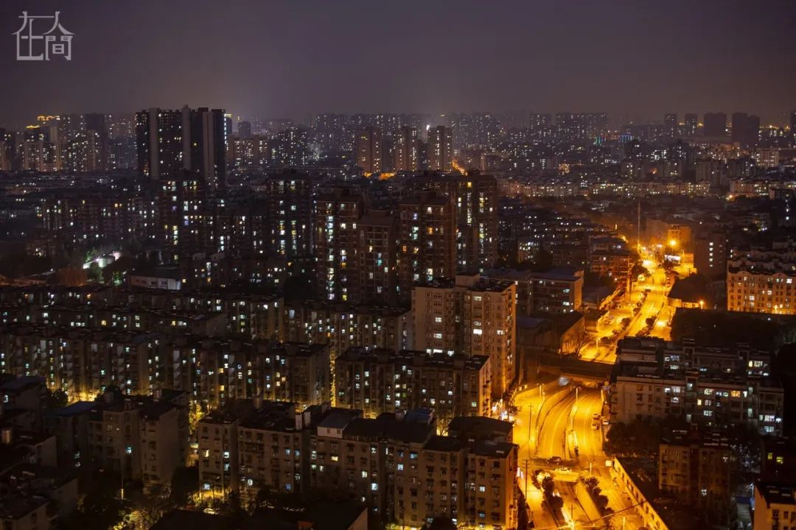
■ 2月21日傍晚，太阳落山，武汉市武昌区平安路的路灯亮了，周围居民楼的灯光也陆续亮起。至今日，武汉市已经封城整整30天。建国爹/摄


新型肺炎疫情牵动人心，
《在人间》现面向全国网友征稿：
（一） 疫区影像日记
如果你身处疫区
请你用照片（视频）和文字记录
你所听闻和见到的一切
照片不少于3张
文字不少于300字
投稿方式：微信联系人间君（zairenjianliving）
（二）抗击疫情真实故事
无论你是一线医护人员、志愿者、
确诊或疑似患者及家属、已治愈出院人士等等，
如果希望讲述疫情相关经历，
请微信联系人间君（zairenjianliving）

文章已于修改
原文链接 备份链接 岛语 非常时期，武汉成了全国人民挂念、祈福的城市。封城后，武汉人民的真实生活是什么样？ 武汉在发生哪些变化？ 正和岛自1月26日起特别推出“叶青专栏”。叶青是一位定居武汉40年的市民，也是一名学者和官员。在过往多期的专 …
原文链接 备份链接 【财新网】（记者 黄蕙昭 综合）距离1月20日晚钟南山院士宣布病毒“肯定人传人”已近一月，湖北内外氛围有别：疫情核心区武汉，新冠疫情仍处于胶着对垒状态，从2月16日起，武汉市启动三天拉网式大排查，誓将底数摸清，把握疫情 …
原文链接 备份链接 2 月 17 日，《中华流行病学杂志》杂志上，中国疾病预防控制中心新型冠状病毒肺炎应急响应机制流行病学组最新发表新冠肺炎研究。 在对截至 2020 年 2 月 11 日中国内地报告的 超过 7 万病例的流行病学特征进行 …
原文链接 备份链接 【财新网】（记者 丁捷 综合）距离新冠肺炎的出现迄今已经超两月。病毒从何而来尚未明晰。2月16日，中科院武汉病毒研究所发布声明，辟谣“零号病人”。此外，全国前两例感染患者遗体解剖完成，这两具由解剖获得的新冠肺炎病理目 …
原文链接 备份链接 【财新网】（记者 丁捷）湖北新冠肺炎确诊病人一夜暴增。据湖北卫健委2月13日通报，2月12日全省新增新冠肺炎病例14840例，这和湖北省首次将“临床诊断病例”纳入确诊有关。“第五版诊疗方案”2月4日下发后，患者数量未 …